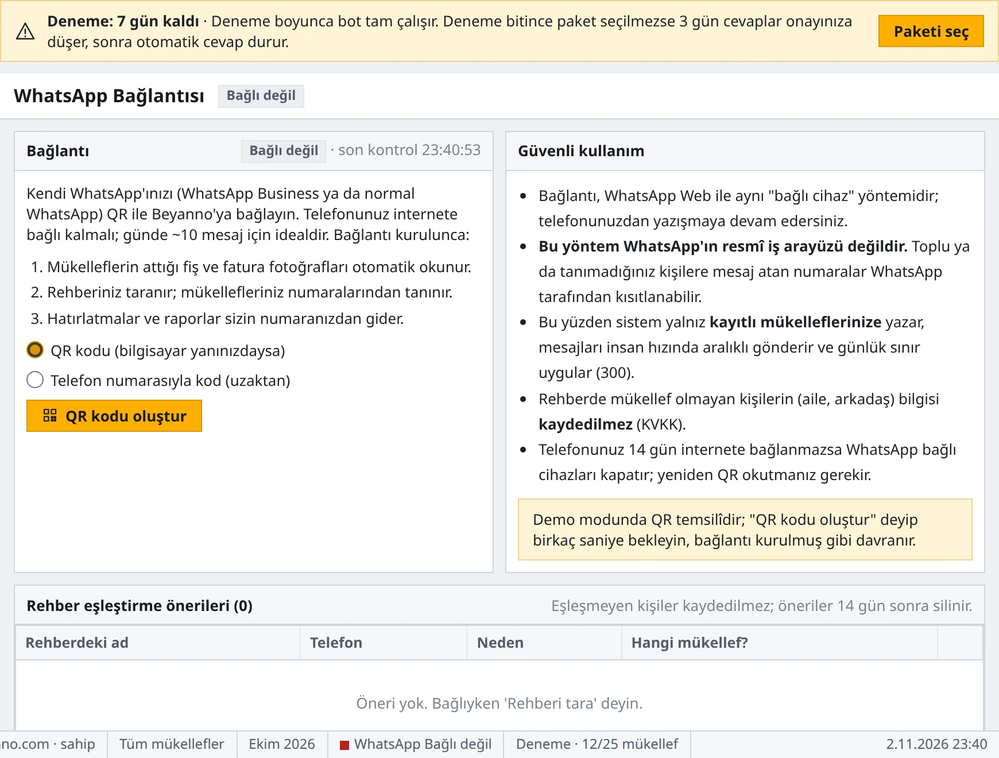
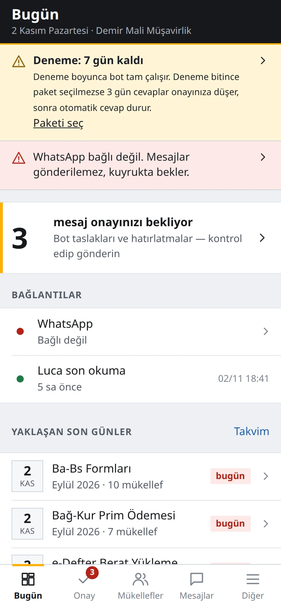

Mükellef gece yazar. Cevap hazır olsun.
“KDV'm ne kadar?”, “Beyannamem verildi mi?”, “Son gün ne zaman?” Aynı sorular gün boyu, hatta gece gelir. Müşavir hem işini yapar hem telefona cevap yetiştirir.
Beyanno, mükelleflerin sorularını sizin WhatsApp numaranızdan, Luca'daki kayıtlara bakarak cevaplar. Luca'ya yalnız okuma yetkisiyle bağlanır; kayıt değiştirmez. Bilmediğini uydurmaz, “müşavirinize ilettim” der ve size görev açar. Cevap modunu siz seçersiniz: otomatik ya da önce onayınıza.
- Mükellef yeni numara öğrenmez, sizin numaranıza yazar
- Gönderilecek her mesaj önizlenebilir
- Mevzuat sorularında “kesin görüş için müşaviriniz” notu
Şu an: Canlıda; kayıt olunca 7 gün ücretsiz deneme başlar. Şu an yalnız Luca Mali Müşavir Paketi ile çalışır; başka program için sıraya alıyoruz. Tahakkuk ve borç bilgisi için Luca'dan tahakkuk ve borç bilgisi GİB anahtarı gerektiriyor. Meslek odaları ve birlikler için toplu kurulum görüşmeye açık.

